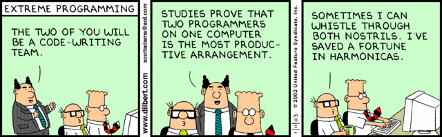

When I started doing phase 0 for DBC, pairing was my biggest concern. What if I didn’t get along with my pair? What if I was the weak link? What if they were the weak link?
There are a lot of things that are outside of your control when you pair, and when you’re working by yourself, there is no one watching you make mistakes. It’s easy to think that pairing isn’t useful or write it off as a waste of time, but I think that despite how awkward they make me feel, I have always benefited from pairing.
For one, you solve challenges quicker. It doesn’t seem like it should be that way, especially if you’ve ever worked on a large team that has dragged their heels. But when you’re pairing, you can easily bounce ideas off of someone, and more often than not you’ll get a different point of view that you hadn’t even considered. Plus, there’s someone who will tell you “hey, you spelled elsif wrong” and will inevitably save you from hours staring at your code wondering why it doesn’t pass. As a bonus, I can honestly say that I’ve learned something new every single time I’ve paired.
Additionally, you make friends. Sure, not everyone will be your friend, but there are quite a few where I end our pairing session and think, “Wow, that was so much fun!” DBC is a unique experience, and it’s easy to get isolated from your family and friends. One of my fellows boots was telling me how he showed his family his completed challenge and they were totally unimpressed because they didn’t understand how much time and energy went into it. When you’re pairing, the struggle is shared, as well as the excitement and pride when the challenge is finished.
For me, I find the most difficult part of pairing to be communicating effectively. The first couple of minutes when I get to know someone are crucial - if I don’t feel comfortable talking with them, I lock up and am hesitant to suggest ideas during our session. However if we get off on a good foot and laugh a bit, pairing ends up being really enjoyable.
Reading my feedback from pairing sessions is a double edged sword and has made me realize that I don’t take criticism well. I appreciate knowing where my flaws and successes are, but at the same time reading that one line of criticism distracts me from the rest of the feedback. It’s hard for me to focus on what I did well when I know that there are things that I should have improved on. Don’t get me wrong, the feedback is incredibly helpful, but it is definitely a blow to my ego. But at least now I know to be more confident in my decision making and to fully discuss my ideas, no matter how shoddy they might be. Knowing that is at least a step in the right direction.
On that end, writing feedback can be complicated. Sometimes I’m just not sure how the pairing session went - yes, we completed the challenge, but was it a good pairing? It can be hard to determine what kind of feedback is actionable, specific, and kind. It’s easy to pinpoint what your pair did well, but it’s not always as easy to pinpoint where they need to improve. It can be hard to tell if someone is disinterested or if they’re just quiet.
Maybe I’m finally getting used to it, but I can see now why pairing is encouraged at DBC. People often think of programmers as working alone in a dark room, but the reality is that you’re often going to be working with other people. Similarly, I think it’s essential that we give and receive feedback for our pairing - otherwise, how else will we improve?